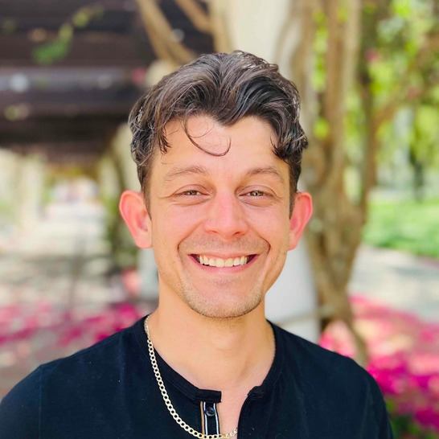

Postdoctoral ResearcherPeople
The scientists behind the research
An interdisciplinary group working across computational chemistry, pharmaceutical sciences, biology, physics, and data science.
Principal Investigator
Jana Shen, PhD
Professor of Pharmaceutical Sciences
Professor Shen leads the group’s work in molecular simulation, constant-pH methods, computational biophysics, drug discovery, and materials modeling.
Current team
Postdoctoral Researchers
Joseph Clayton
Aarion Romany
Subarna Sasmal
Harry
Friederike Wunsch
Current team
Graduate Students
Mingzhe Shen
Fernando Caballero
Positions Available
We welcome inquiries from graduate students interested in computational molecular science.
View open positionsCurrent team
Undergraduate Students
Positions Available
Undergraduate students interested in computational chemistry and molecular simulation are encouraged to apply.
View open positionsFormer members
Lab Alumni
Prof. Shuhua Ma, PhD
Sabbatical and summer visitor, 2017–2025
Towson University
Prof. Yandong Huang, PhD
Visiting scholar, 2019–2020
Jimei University, Xiamen, China
Ruibin Liu, PhD
Research Associate, 2018–2024
Currently: Senior Scientist at Humanwell Healthcare, Wuhan, China
Yuhang Wang, PhD
Master’s Student, 2009–2011
Currently: Senior Scientist at QSimulate, Boston, MA
Jason Wallace, PhD
PhD Student, 2008–2012
Currently: Dentist at Bethany Dental Group, Oklahoma City, Oklahoma
Chuanyin Shi, PhD
Postdoctoral Fellow, 2009–2011
Currently: Senior Research Scientist at Second Military Medical University, Shanghai, China
Yoann Cote, PhD
Postdoctoral Fellow, 2013
Currently: Data Scientist at GreenTropism, Paris, France
Brian Morrow, PhD
Postdoctoral Fellow, 2011–2015
Currently: Research Faculty at the United States Naval Academy
Wei Chen, PhD
Postdoctoral Fellow, 2012–2016
Currently: Senior Scientist at Schrödinger, New York City
Shaoqi Zhan, PhD
Postdoctoral Fellow, 2020–2021
Currently: Postdoctoral Fellow at the University of Oxford, UK
Jack Henderson, PhD
PhD Student, 2017–2021
Currently: Senior Scientist at Scorpion Therapeutics, Cambridge, MA
Daniel Khavrutskii, BS
Undergraduate Intern, 2020–2022
Currently: Software Development Engineer at Amazon
Christopher Ellis, PhD
Postdoctoral Fellow, 2014–2016
Currently: US Army Research Laboratory, Aberdeen Proving Ground, MD
Yandong Huang, PhD
Postdoctoral Fellow, 2014–2017
Currently: Associate Professor at Jimei University, Xiamen, China
Zhi Yue, PhD
PhD Student, 2012–2018
Currently: Postdoctoral Associate at the University of Chicago
Cheng-Chieh (Kevin) Tsai, PhD
PhD Student, 2014–2019
Currently: Director of Business Development at XtalPi, Cambridge, MA
Julie Harris, PhD
Postdoctoral Fellow, 2017–2020
Currently: Principal Software Engineer at Aerial Applications, Washington, DC
Neha Verma, PhD
Postdoctoral Fellow, 2019–2020
Currently: Bioinformatics Scientist at Enzymaster
Quynh Vo, PhD
ORISE Fellow, 2019–2021
Currently: Application Scientist at ComputChem LLC, Maryland
Erik Vazquez, PhD
Postdoctoral Fellow, 2020–2021
Currently: Postdoctoral Fellow at UT Southwestern Medical Center
Paween Mahinthichaichan, PhD
FDA ORISE Fellow, 2018–2022
Currently: Assistant Research Scientist at the University of Maryland, College Park